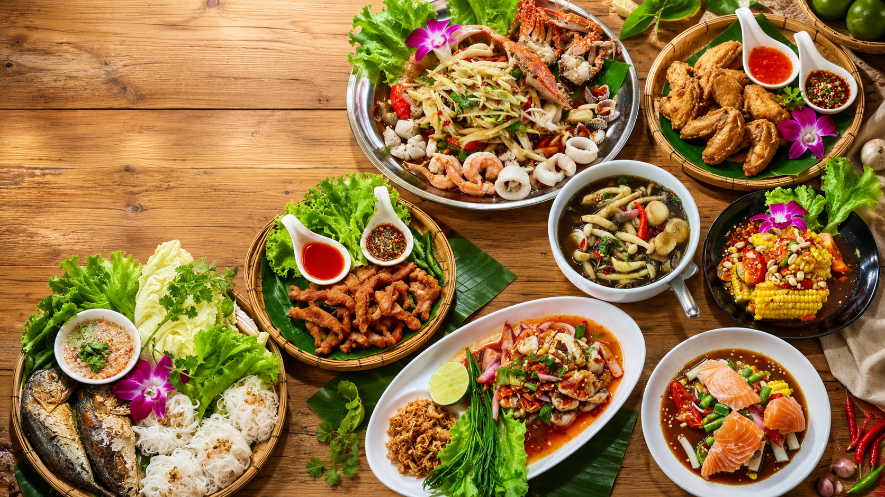

อังคาร-อาทิตย์ · วันจันทร์ปิด

ต้นตำรับความนัว · ครัวอีสานรสจัดจ้าน
แซ่บนัวกาฬสินธุ์
แซ่บถึงใจ... นัวถึงเครื่อง
ยกสำรับความอร่อยแบบอีสานมาไว้ที่โต๊ะคุณ
ส้มตำปลาร้าหอมนัว ยำรสแซ่บ และจานโปรดที่อยากชวนกันมาล้อมวง
THE ISAN TABLE ความสุขที่อร่อยที่สุด คือการได้กินข้าวด้วยกัน
มีบริการรับสินค้าที่ร้าน
เมนูหลากหลาย คุ้มค่า
สอบถามเพิ่มเติมได้โดยตรง
จากครัวอีสาน ด้วยหัวใจ
คำแรกติดใจ
คำต่อไป คิดฮอดอีสาน
ร้านเน้นรสชาติปลาร้าหอมนัว ส้มตำรสจัด เมนูยำและเหลาเครื่องแน่น พร้อมเมนูย่าง ทอด ต้ม แกง และของกินเล่นครบสำหรับหลายคนหลายรส
ปลาร้านัว
เมนูตำ-ยำหลากหลาย
ราคาจับต้องได้
เวลาทำการ
วางแผนแวะร้านได้ง่าย
รีวิวจากลูกค้า
ความอร่อย ที่ลูกค้าเล่าต่อ
“อาหารอีสาน รสท้องถิ่น อร่อยจริง ราคาไม่แพง แต่รสชาติเกินราคา”
ลูกค้า Google Maps“อาหารอร่อยมาก ร้านสะอาด สะดวก อาหารรสจัด ผ่านต้องแวะอีกค่ะ”
ลูกค้า Google Maps“ดีย์มากกก อร่อยทุกเมนู อีกหนึ่งร้านที่อยากแนะนำ”
ลูกค้า Google Mapsติดต่อและเส้นทาง
พร้อมแวะชิมความแซ่บ
ร้านแซ่บนัว กาฬสินธุ์ โทรสอบถามเมนูหรือเส้นทางได้ที่เบอร์ร้าน และเปิดแผนที่เพื่อเริ่มนำทางจากตำแหน่งปัจจุบันได้ทันที